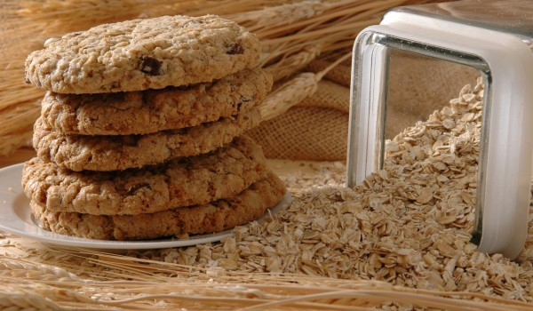

Приготвяне на Лесни бисквити с канела

Смесете яйцето, маслото на стайна температура и меда. В отделна купа смесете всички останали продукти и рабъркайте. Добавете ги към течната смес, разбъркайте. По желание можете да добавите и парченца шоколад.
Пуснете фурната да се загрява и започнете да слагате от сместа в тава с хартия за печене, като слагате по 1 с.л и притискате да стане тънка сладка.
Ако ви залепва по лъжицата намокрете я с вода. Печете до златист цвят.
Приготвяне на Диетични Палачинки
- яйца - 3 голeми
- овесени ядки - 4 с.л. (40 г)
- сол - 1 щипка хималайска
- кисело мляко - 6 с.л. пълномаслено
- вода - 3 с.л., по желание може и сухо мляко, разтворено във вода
- мазнина - олио или зехтин за намазняване тигана
Смелете овесените ядки в мелачка. Разбийте яйцата и добавете овесените ядки, солта, киселото мляко и след като хубаво се разбие, добавете и разбийте с водата.
Загрейте тиган с незалепващо покритие и го намазнете. Изпечете палачинки по стандартния начин, като ги обръщате внимателно, помагайки си с ръце. След всяка леко намазнявайте тигана.
Гарнирайте палачинките с плънката, приготвена от сварения и нарязан морков, объркан с изварата, и подправки на вкус.